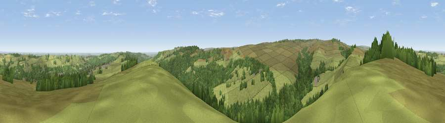

Whitwell Moor
#6511 in England · top 4% of its area beats it · near BolsterstoneThe view, rendered

A 360° render of this exact spot computed from the terrain model, tree cover and land cover — summer colours, afternoon light, calibrated against photographs of famous viewpoints. Real trees, hedges and buildings will differ in detail.
The panorama
Grey silhouette: terrain skyline in each direction (720 bearings, Earth curvature and refraction included). Dashed green: skyline with trees (+15 m) and buildings (+8 m) as obstacles. Blue strip: how far the ground is visible on each bearing.
Where the view opens
Wedge length = distance to the farthest visible ground on that bearing (vegetation-aware). Rings at 10, 25 and 50 km.
What fills the view
67% grassland · 30% woodland · 1% cropland · 1% built-up
Angular shares of the visible panorama (visual magnitude), not map area. Landscape diversity 0.33 (0–1 Shannon).
Key numbers
More beautiful places nearby
The staircase of upgrades: each row has a higher view potential than everything closer. Driving times are estimates from straight-line distance, calibrated against real road routing — check an actual route before setting out.
| Place | Direction | Drive | Score |
|---|---|---|---|
| Viewpoint near Stocksbridge | NE · 3 km | ~7 min | 73.1 |
| Viewpoint near Wharncliffe Side | E · 6 km | ~13 min | 75.0 |
| Viewpoint near Wharncliffe Side | E · 7 km | ~14 min | 75.2 |
| Viewpoint near Greenfield | WNW · 25 km | ~41 min | 76.0 |
| Viewpoint near Carrbrook | W · 26 km | ~42 min | 77.1 |
| Viewpoint near Otley | N · 47 km | ~68 min | 77.5 |
| Viewpoint near Mow Cop | SW · 55 km | ~77 min | 78.9 |
| Viewpoint near Mow Cop | SW · 56 km | ~78 min | 80.2 |
53.47162, -1.62611 · source: dobih hill · position refined by local search. Computed location — check access rights before visiting.